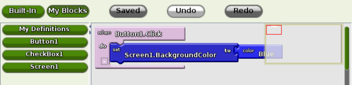

App Inventor for Android
You can build many different types of apps with App Inventor. Often people begin by building games like MoleMash or games that let you draw funny pictures on your friend's faces. You can even make use of the phone's sensors to move a ball through a maze based on tilting the phone.
But app building is not limited to simple games. You can also build apps that inform and educate. You can create a quiz app to help you and your classmates study for a test. With Android's text-to-speech capabilities, you can even have the phone ask the questions aloud.
To use App Inventor, you do not need to be a professional developer. This is because instead of writing code, you visually design the way the app looks and use blocks to specify the app's behavior.

The App Inventor team has created blocks for just about everything you can do with an Android phone, as well as blocks for doing "programming-like" stuff-- blocks to store information, blocks for repeating actions, and blocks to perform actions under certain conditions. There are even blocks to talk to services like Twitter.
Simple but Powerful!
App Inventor is simple to use, but also very powerful. Apps you build can even store data created by users in a database, so you can create a make-a-quiz app in which the teachers can save questions in a quiz for their students to answer.
| Because App Inventor provides access to a GPS-location sensor, you can build apps that know where you are. You can build an app to help you remember where you parked your car, an app that shows the location of your friends or colleagues at a concert or conference, or your own custom tour app of your school, workplace, or a museum. | |
| You can write apps that use the phone features of an Android phone. You can write an app that periodically texts "missing you" to your loved ones, or an app "No Text While Driving" that responds to all texts automatically with "sorry, I'm driving and will contact you later". You can even have the app read the incoming texts aloud to you (though this might lure you into responding). | |

|
App Inventor provides a way for you to communicate with the web. If you know how to write web apps, you can use App Inventor to write Android apps that talk to your favorite web sites, such as Amazon and Twitter. |
Remember the Beta Tag
As a Google Labs, beta product App Inventor still has rough edges and missing features. In some cases the rough edges include un-pleasantries such as:
- Installing Windows device drivers
- Installing Java on your computer
- Fiddling with settings on your phone
On the Shoulders of Giants!
In creating App Inventor for Android, we're fortunate to be able to draw upon significant prior research in educational computing, and work done in Google on online development environments.
The blocks editor uses the Open Blocks Java library for creating visual blocks programming languages. Open Blocks is distributed by the Massachusetts Institute of Technology's Scheller Teacher Education Program and derives from thesis research by Ricarose Roque. We thank Eric Klopfer and Daniel Wendel of the Scheller Program for making Open Blocks available and for their help in working with it. Open Blocks visual programming is closely related to the Scratch programming language , a project of the MIT Media Laboratory's Lifelong Kindergarten Group .
The compiler that translates the visual blocks language for implementation on Android uses the Kawa Language Framework and Kawa's dialect of the Scheme programming language, developed by Per Bothner and distributed as part of the Gnu Operating System by the Free Software Foundation .
The educational perspective that motivates App Inventor holds that programming can be a vehicle for engaging powerful ideas through active learning. As such, it is part of an ongoing movement in computers and education that began with the work of Seymour Papert and the MIT Logo Group in the 1960s.